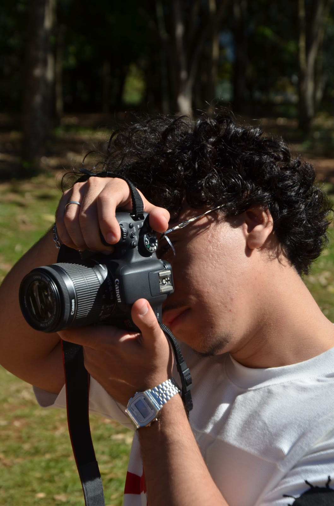

A fotografia celebra.
Em um mundo cheio de movimento, fotografar é transformar instantes em memórias eternas e brilhantes.


Nossos dias correm entre mensagens, trajetos e encontros inesperados. É um fluxo veloz - e fascinante.
No meio dessa corrente existem fagulhas de beleza: um olhar, uma risada, uma luz atravessando a janela.
Já imaginou poder guardar os melhores momentos pra sempre?
Com uma fotografia você pode!
Dois jeitos de contar o tempo: deixá-lo escorrer em luz ou
congelá-lo numa fração de segundo


Uma finta infinita de momentos que não pediram licença para acontecer.